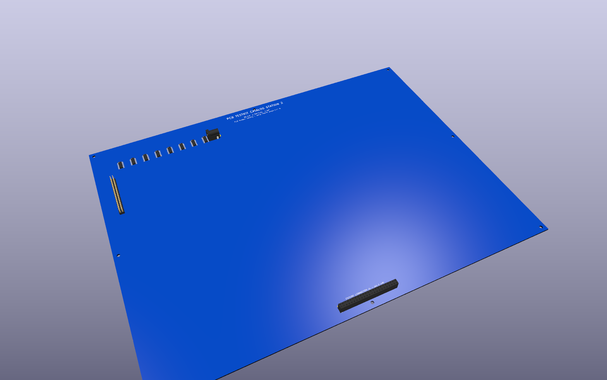

PCB TestKit catalog
PCB TestKit catalog station 1 (existing)

Takes 118 board types, 381 boards per load in all. Station page (pin maps, every board type's outputs)
| Needs | Count | |
|---|---|---|
| Plate | 300 x 220 mm | 4 holes; 300 x 201.46 mm for the boards |
| Socket J1 | 80 pins | 2 x 40 socket, 2.54 mm |
| Socket J2 | 52 pins | 2 x 26 socket, 2.54 mm |
| Analog inputs | 56 | 0..10 V; 14 x 4-channel 16-bit ADC (e.g. ADS1115); most at once 54 (power_02) |
| Switched supplies | 8 | a switched, current-limited output per board of a batch, adjustable 3.3..24 V, up to 0.5 A |
| CAN | 4 | a CAN transceiver per instance (ISO 11898, 120 ohm termination you can switch) can_node_01, can_node_02, can_node_03, can_node_04, can_node_05, can_node_06 ... |
| Ethernet | 2 | a 100BASE-TX port with magnetics per instance (the pairs go through pogo pins: keep them under 50 mm) controller_01, controller_02, controller_03, controller_04, controller_05, controller_06 ... |
| I2C | 4 | an I2C controller per instance, with pull-ups avr_board_01, avr_board_06, avr_board_07, power_01, power_04, power_08 ... |
| RS485 | 2 | a half-duplex RS-485 transceiver per instance gateway_02, gateway_03, gateway_04, rs485_io_01, rs485_io_02, rs485_io_03 ... |
| UART | 4 | a 3.3 V UART per instance (TX/RX crossed: the board's TX goes to the station's RX) avr_board_01, avr_board_02, avr_board_03, avr_board_04, avr_board_05, avr_board_06 ... |
| USB | 2 | a USB 2.0 host port per instance (full speed through pogo pins: keep the traces short) controller_01, controller_02, controller_04, controller_05, controller_07, gateway_06 ... |
| Digital lines | 4 | spare |
| AVR ISP programmer | 4 | one per board of the largest batch avr_board_01, avr_board_02, avr_board_03, avr_board_04, avr_board_05, avr_board_06 ... |
| JTAG adapter | 4 | one per board of the largest batch controller_01, controller_02, controller_03, controller_04, controller_05, controller_06 ... |
| PIC ICSP programmer | 3 | one per board of the largest batch power_02, power_03, power_08 |
| SWD probe | 8 | one per board of the largest batch can_node_01, can_node_02, can_node_03, can_node_04, can_node_05, can_node_06 ... |
PCB TestKit catalog station 2

Plate: 400 x 300 mm takes 1 board types more than a 300 x 220 mm plate would (1 against 0); set large_plate_mm to [] in the spec to keep every station at plate_mm.
Takes 1 board types, 1 boards per load in all. Station page (pin maps, every board type's outputs)
| Needs | Count | |
|---|---|---|
| Plate | 400 x 300 mm | 8 holes; 400 x 281.46 mm for the boards |
| Socket J1 | 46 pins | 2 x 23 socket, 2.54 mm |
| Analog inputs | 32 | 0..10 V; 8 x 4-channel 16-bit ADC (e.g. ADS1115); most at once 32 (video) |
| Switched supplies | 0 | a switched, current-limited output per board of a batch |
| Digital lines | 4 | spare |
Layouts compared
Every way of laying out the stations that was looked at, estimated from the board profiles: what the boards that fit are worth (value_per_board, more for bigger batches) minus what the stations, programmers and fixtures cost. The chosen one is in bold; --layout NAME (spec layout) takes another. Compared when the stations were designed; boards added or upgrades since are not compared again.
| Layout | Stations | Boards that fit | Boards per load | Worth | Cost | Net |
|---|---|---|---|---|---|---|
| general One main station, further ones for the boards it cannot take | station-1: main, 104 boards, 300 x 220 mm | 104 | 343 | EUR 47,984 | EUR 14,286 | EUR 33,698 |
| specialized-2 2 stations, each for boards that need much the same | station-1: CAN, Ethernet, many analog inputs, large boards, 36 boards, 300 x 220 mm station-2: general, 68 boards, 300 x 220 mm | 104 | 343 | EUR 47,984 | EUR 15,580 | EUR 32,404 |
| specialized-3 3 stations, each for boards that need much the same | station-1: CAN, Ethernet, many analog inputs, large boards, 36 boards, 300 x 220 mm station-2: general, 48 boards, 300 x 220 mm station-3: CAN, 20 boards, 300 x 220 mm | 104 | 343 | EUR 47,984 | EUR 17,405 | EUR 30,579 |
| split-can A station for the 33 boards with CAN, one for the rest | station-1: CAN, UART, 74 boards, 300 x 220 mm station-2: general, 30 boards, 300 x 220 mm | 104 | 343 | EUR 47,984 | EUR 16,038 | EUR 31,946 |
| split-uart A station for the 40 boards with UART, one for the rest | station-1: UART, 71 boards, 300 x 220 mm station-2: general, 33 boards, 300 x 220 mm | 104 | 343 | EUR 47,984 | EUR 15,868 | EUR 32,116 |
| split-i2c A station for the 17 boards with I2C, one for the rest | station-1: UART, I2C, 36 boards, 300 x 220 mm station-2: general, 68 boards, 300 x 220 mm | 104 | 343 | EUR 47,984 | EUR 16,133 | EUR 31,851 |
| split-rs485 A station for the 14 boards with RS-485, one for the rest | station-1: RS-485, 20 boards, 300 x 220 mm station-2: general, 84 boards, 300 x 220 mm | 104 | 343 | EUR 47,984 | EUR 15,686 | EUR 32,298 |
| split-usb A station for the 17 boards with USB, one for the rest | station-1: USB, 27 boards, 300 x 220 mm station-2: general, 77 boards, 300 x 220 mm | 104 | 343 | EUR 47,984 | EUR 15,470 | EUR 32,514 |
| split-ethernet A station for the 14 boards with Ethernet, one for the rest | station-1: CAN, Ethernet, many analog inputs, large boards, 36 boards, 300 x 220 mm station-2: general, 68 boards, 300 x 220 mm | 104 | 343 | EUR 47,984 | EUR 15,580 | EUR 32,404 |
Ranking
Boards that fit first, by priority and batch size; then the ones that do not, by priority and by how few pins they would need. ranking.csv
| # | Board | Priority | Station | Batch | Limited by | Needs per board | Programming | Fixture | Why not |
|---|---|---|---|---|---|---|---|---|---|
| 1 | usb_dongle_09 | 1 | station-1 | 10 | plate | 5 ch | - | 6 of 83 to route in KiCad | |
| 2 | usb_dongle_11 | 1 | station-1 | 9 | plate | 4 ch | - | 13 of 70 to route in KiCad | |
| 3 | sensor_20 | 1 | station-1 | 8 | plate = supplies | 3 ch, 5 V | swd | 10 of 119 to route in KiCad | |
| 4 | usb_dongle_07 | 1 | station-1 | 8 | supplies | 3 ch, 5 V | - | 3 of 65 to route in KiCad | |
| 5 | sensor_11 | 1 | station-1 | 8 | plate = supplies | 4 ch, 5 V | swd | 2 of 127 to route in KiCad | |
| 6 | sensor_12 | 1 | station-1 | 8 | supplies | 4 ch, 5 V | swd | 5 of 127 to route in KiCad | |
| 7 | StickHub | 1 | station-1 | 6 | plate | 0 ch | - | routed | |
| 8 | RoyalBlue54L-Feather | 1 | station-1 | 6 | plate | 4 ch, 5 V | - | 13 of 65 to route in KiCad | |
| 9 | sensor_07 | 1 | station-1 | 6 | plate | 5 ch, 5 V | swd | 13 of 111 to route in KiCad | |
| 10 | sensor_08 | 1 | station-1 | 6 | plate | 5 ch, 5 V | swd | 6 of 107 to route in KiCad | |
| 11 | sensor_18 | 1 | station-1 | 6 | plate | 5 ch, 5 V | swd | 16 of 107 to route in KiCad | |
| 12 | sensor_22 | 1 | station-1 | 6 | plate | 5 ch, 5 V | swd | 12 of 111 to route in KiCad | |
| 13 | usb_dongle_05 | 1 | station-1 | 6 | plate | 5 ch, 5 V | swd | 14 of 103 to route in KiCad | |
| 14 | ecc83-pp | 1 | station-1 | 4 | plate | 5 ch | - | routed | |
| 15 | ecc83-pp_v2 | 1 | station-1 | 4 | plate | 5 ch | - | 6 of 111 to route in KiCad | |
| 16 | sensor_04 | 1 | station-1 | 4 | plate | 5 ch, 5 V | swd | 1 of 75 to route in KiCad | |
| 17 | sensor_24 | 1 | station-1 | 4 | plate | 5 ch, 5 V | swd | routed | |
| 18 | sensor_25 | 1 | station-1 | 4 | plate | 5 ch, 5 V | swd | 1 of 79 to route in KiCad | |
| 19 | sensor_05 | 1 | station-1 | 4 | i2c buses | 4 ch, 5 V, I2C | - | routed | |
| 20 | sensor_10 | 1 | station-1 | 4 | i2c buses = uart buses | 2 ch, 5 V, I2C UART | swd | 3 of 79 to route in KiCad | |
| 21 | sensor_17 | 1 | station-1 | 4 | i2c buses | 4 ch, 5 V, I2C | - | 4 of 63 to route in KiCad | |
| 22 | sensor_23 | 1 | station-1 | 4 | uart buses | 4 ch, 5 V, UART | - | 2 of 67 to route in KiCad | |
| 23 | can_node_16 | 1 | station-1 | 4 | can buses = plate | 5 ch, 12 V, CAN | - | routed | |
| 24 | sensor_03 | 1 | station-1 | 4 | plate = uart buses | 5 ch, 5 V, UART | swd | routed | |
| 25 | sensor_13 | 1 | station-1 | 4 | uart buses | 5 ch, 5 V, UART | swd | 3 of 91 to route in KiCad | |
| 26 | sensor_14 | 1 | station-1 | 4 | i2c buses = plate | 5 ch, 5 V, I2C | swd | 3 of 87 to route in KiCad | |
| 27 | sensor_15 | 1 | station-1 | 4 | i2c buses = plate | 5 ch, 5 V, I2C | swd | 3 of 87 to route in KiCad | |
| 28 | sensor_19 | 1 | station-1 | 4 | plate = uart buses | 5 ch, 5 V, UART | swd | 1 of 87 to route in KiCad | |
| 29 | sensor_21 | 1 | station-1 | 4 | uart buses | 5 ch, 5 V, UART | swd | 1 of 87 to route in KiCad | |
| 30 | avr_board_02 | 1 | station-1 | 4 | plate = uart buses | 6 ch, 5 V, UART | avr_isp | 8 of 95 to route in KiCad | |
| 31 | avr_board_03 | 1 | station-1 | 4 | plate = uart buses | 6 ch, 12 V, UART | avr_isp | 2 of 107 to route in KiCad | |
| 32 | can_node_03 | 1 | station-1 | 4 | can buses = plate | 6 ch, 12 V, CAN | swd | 5 of 103 to route in KiCad | |
| 33 | can_node_08 | 1 | station-1 | 4 | can buses = plate | 6 ch, 12 V, CAN | swd | 5 of 103 to route in KiCad | |
| 34 | can_node_13 | 1 | station-1 | 4 | can buses = plate | 6 ch, 12 V, CAN | swd | 4 of 103 to route in KiCad | |
| 35 | sensor_06 | 1 | station-1 | 4 | i2c buses = plate = uart buses | 4 ch, 5 V, I2C UART | - | 4 of 71 to route in KiCad | |
| 36 | sensor_01 | 1 | station-1 | 4 | i2c buses = plate = uart buses | 5 ch, 5 V, I2C UART | swd | 5 of 95 to route in KiCad | |
| 37 | sensor_02 | 1 | station-1 | 4 | i2c buses = uart buses | 5 ch, 5 V, I2C UART | swd | 3 of 95 to route in KiCad | |
| 38 | sensor_09 | 1 | station-1 | 4 | i2c buses = plate = uart buses | 5 ch, 5 V, I2C UART | swd | 1 of 95 to route in KiCad | |
| 39 | sensor_16 | 1 | station-1 | 4 | i2c buses = uart buses | 5 ch, 5 V, I2C UART | - | 1 of 75 to route in KiCad | |
| 40 | avr_board_01 | 1 | station-1 | 4 | i2c buses = plate = uart buses | 6 ch, 12 V, I2C UART | avr_isp | 5 of 115 to route in KiCad | |
| 41 | avr_board_06 | 1 | station-1 | 4 | i2c buses = plate = uart buses | 6 ch, 12 V, I2C UART | avr_isp | 8 of 115 to route in KiCad | |
| 42 | avr_board_07 | 1 | station-1 | 4 | i2c buses = plate = uart buses | 6 ch, 5 V, I2C UART | avr_isp | 6 of 103 to route in KiCad | |
| 43 | can_node_04 | 1 | station-1 | 4 | can buses = plate = uart buses | 6 ch, 12 V, CAN UART | swd | 7 of 111 to route in KiCad | |
| 44 | can_node_06 | 1 | station-1 | 4 | can buses = plate = uart buses | 6 ch, 12 V, CAN UART | swd | 4 of 111 to route in KiCad | |
| 45 | can_node_11 | 1 | station-1 | 4 | can buses = plate = uart buses | 6 ch, 24 V, CAN UART | swd | 4 of 111 to route in KiCad | |
| 46 | can_node_12 | 1 | station-1 | 4 | can buses = plate = uart buses | 6 ch, 12 V, CAN UART | swd | 3 of 111 to route in KiCad | |
| 47 | can_node_14 | 1 | station-1 | 4 | can buses = plate = uart buses | 6 ch, 12 V, CAN UART | swd | 6 of 111 to route in KiCad | |
| 48 | can_node_15 | 1 | station-1 | 4 | can buses = plate = uart buses | 6 ch, 12 V, CAN UART | swd | 8 of 111 to route in KiCad | |
| 49 | can_node_17 | 1 | station-1 | 4 | can buses = plate = uart buses | 6 ch, 24 V, CAN UART | swd | 3 of 111 to route in KiCad | |
| 50 | can_node_18 | 1 | station-1 | 4 | can buses = plate = uart buses | 6 ch, 24 V, CAN UART | swd | 2 of 111 to route in KiCad | |
| 51 | can_node_19 | 1 | station-1 | 4 | can buses = plate = uart buses | 6 ch, 12 V, CAN UART | swd | 6 of 111 to route in KiCad | |
| 52 | sonde xilinx | 1 | station-1 | 4 | inputs = plate | 13 ch, 5 V | jtag | 5 of 151 to route in KiCad | |
| 53 | CM5_MINIMA_3 | 1 | station-1 | 3 | plate | 6 ch, 5 V | - | routed | |
| 54 | avr_board_04 | 1 | station-1 | 3 | plate | 6 ch, 12 V, UART | avr_isp | routed | |
| 55 | avr_board_05 | 1 | station-1 | 3 | plate | 6 ch, 12 V, UART | avr_isp | 3 of 86 to route in KiCad | |
| 56 | can_node_02 | 1 | station-1 | 3 | plate | 6 ch, 12 V, CAN | swd | 2 of 83 to route in KiCad | |
| 57 | can_node_09 | 1 | station-1 | 3 | plate | 6 ch, 24 V, CAN | swd | 1 of 83 to route in KiCad | |
| 58 | can_node_10 | 1 | station-1 | 3 | plate | 6 ch, 12 V, CAN | swd | 1 of 83 to route in KiCad | |
| 59 | can_node_01 | 1 | station-1 | 3 | plate | 6 ch, 12 V, CAN UART | swd | 2 of 89 to route in KiCad | |
| 60 | can_node_05 | 1 | station-1 | 3 | plate | 6 ch, 12 V, CAN UART | swd | 1 of 89 to route in KiCad | |
| 61 | can_node_07 | 1 | station-1 | 3 | plate | 6 ch, 12 V, CAN UART | swd | 4 of 89 to route in KiCad | |
| 62 | power_09 | 1 | station-1 | 3 | plate | 8 ch, 24 V, I2C | - | 5 of 92 to route in KiCad | |
| 63 | power_08 | 1 | station-1 | 3 | inputs = plate | 15 ch, 24 V, I2C | pic_icsp | 8 of 128 to route in KiCad | |
| 64 | power_02 | 1 | station-1 | 3 | inputs = plate | 18 ch, 24 V | pic_icsp | 5 of 131 to route in KiCad | |
| 65 | usb_dongle_01 | 1 | station-1 | 2 | usb buses | 3 ch, USB | - | routed | |
| 66 | usb_dongle_04 | 1 | station-1 | 2 | usb buses | 3 ch, 3.3 V, USB | swd | routed | |
| 67 | usb_dongle_06 | 1 | station-1 | 2 | usb buses | 3 ch, 5 V, USB | - | 1 of 37 to route in KiCad | |
| 68 | usb_dongle_13 | 1 | station-1 | 2 | usb buses | 4 ch, 5 V, USB | - | routed | |
| 69 | usb_dongle_02 | 1 | station-1 | 2 | usb buses | 5 ch, 5 V, USB | swd | 3 of 53 to route in KiCad | |
| 70 | usb_dongle_03 | 1 | station-1 | 2 | usb buses | 5 ch, 3.3 V, USB | swd | 1 of 55 to route in KiCad | |
| 71 | usb_dongle_08 | 1 | station-1 | 2 | usb buses | 5 ch, 3.3 V, USB | swd | 5 of 55 to route in KiCad | |
| 72 | usb_dongle_10 | 1 | station-1 | 2 | usb buses | 5 ch, 5 V, USB | swd | 2 of 53 to route in KiCad | |
| 73 | usb_dongle_12 | 1 | station-1 | 2 | usb buses | 5 ch, 5 V, USB | swd | routed | |
| 74 | multichannel_mixer | 1 | station-1 | 2 | plate | 8 ch, 12 V | - | 2 of 95 to route in KiCad | |
| 75 | rs485_io_04 | 1 | station-1 | 2 | plate = rs485 buses | 6 ch, 24 V, RS485 | swd | routed | |
| 76 | rs485_io_05 | 1 | station-1 | 2 | rs485 buses | 6 ch, 24 V, RS485 | swd | routed | |
| 77 | rs485_io_07 | 1 | station-1 | 2 | rs485 buses | 6 ch, 24 V, RS485 | swd | routed | |
| 78 | rs485_io_09 | 1 | station-1 | 2 | rs485 buses | 6 ch, 24 V, RS485 | swd | routed | |
| 79 | gateway_01 | 1 | station-1 | 2 | plate | 7 ch, 24 V, CAN | swd | routed | |
| 80 | gateway_08 | 1 | station-1 | 2 | plate | 7 ch, 12 V, CAN | swd | routed | |
| 81 | power_07 | 1 | station-1 | 2 | plate | 9 ch, 24 V | - | 1 of 69 to route in KiCad | |
| 82 | rs485_io_01 | 1 | station-1 | 2 | rs485 buses | 7 ch, 24 V, RS485 | avr_isp | 3 of 67 to route in KiCad | |
| 83 | rs485_io_03 | 1 | station-1 | 2 | rs485 buses | 7 ch, 24 V, RS485 | avr_isp | routed | |
| 84 | power_06 | 1 | station-1 | 2 | plate | 10 ch, 24 V | - | routed | |
| 85 | power_10 | 1 | station-1 | 2 | plate | 10 ch, 24 V | - | 3 of 71 to route in KiCad | |
| 86 | rs485_io_06 | 1 | station-1 | 2 | rs485 buses | 6 ch, 24 V, RS485 UART | swd | 1 of 67 to route in KiCad | |
| 87 | rs485_io_08 | 1 | station-1 | 2 | rs485 buses | 6 ch, 24 V, RS485 UART | swd | 3 of 67 to route in KiCad | |
| 88 | rs485_io_10 | 1 | station-1 | 2 | rs485 buses | 6 ch, 24 V, RS485 UART | swd | 1 of 67 to route in KiCad | |
| 89 | rs485_io_11 | 1 | station-1 | 2 | rs485 buses | 6 ch, 24 V, RS485 UART | swd | routed | |
| 90 | gateway_05 | 1 | station-1 | 2 | ethernet buses = plate | 7 ch, 12 V, ETHERNET | swd | routed | |
| 91 | power_05 | 1 | station-1 | 2 | plate | 11 ch, 24 V | - | 2 of 71 to route in KiCad | |
| 92 | power_11 | 1 | station-1 | 2 | plate | 11 ch, 24 V | - | 7 of 65 to route in KiCad | |
| 93 | rs485_io_02 | 1 | station-1 | 2 | plate = rs485 buses | 7 ch, 24 V, RS485 UART | avr_isp | routed | |
| 94 | gateway_07 | 1 | station-1 | 2 | plate = usb buses | 8 ch, 24 V, CAN USB | jtag | routed | |
| 95 | gateway_10 | 1 | station-1 | 2 | ethernet buses = plate | 8 ch, 24 V, ETHERNET | jtag | routed | |
| 96 | power_04 | 1 | station-1 | 2 | plate | 10 ch, 24 V, I2C | - | 1 of 73 to route in KiCad | |
| 97 | complex_hierarchy | 1 | station-1 | 2 | plate | 13 ch | - | 1 of 95 to route in KiCad | |
| 98 | gateway_06 | 1 | station-1 | 2 | plate = usb buses | 9 ch, 24 V, CAN USB | jtag | routed | |
| 99 | gateway_11 | 1 | station-1 | 2 | ethernet buses = plate | 9 ch, 24 V, ETHERNET | jtag | routed | |
| 100 | gateway_09 | 1 | station-1 | 2 | ethernet buses = plate = usb buses | 8 ch, 12 V, ETHERNET USB | jtag | routed | |
| 101 | gateway_02 | 1 | station-1 | 2 | ethernet buses = plate = rs485 buses | 7 ch, 12 V, CAN ETHERNET RS485 | swd | 1 of 77 to route in KiCad | |
| 102 | gateway_03 | 1 | station-1 | 2 | ethernet buses = plate = rs485 buses | 7 ch, 24 V, CAN ETHERNET RS485 | swd | 4 of 77 to route in KiCad | |
| 103 | gateway_04 | 1 | station-1 | 2 | ethernet buses = plate = rs485 buses | 7 ch, 24 V, CAN ETHERNET RS485 | swd | 3 of 77 to route in KiCad | |
| 104 | power_01 | 1 | station-1 | 2 | plate | 13 ch, 24 V, I2C | - | 2 of 73 to route in KiCad | |
| 105 | power_03 | 1 | station-1 | 2 | plate | 16 ch, 24 V | pic_icsp | 5 of 91 to route in KiCad | |
| 106 | One-Air-Max | 1 | station-1 | 2 | inputs = plate | 24 ch, I2C | - | 8 of 81 to route in KiCad | |
| 107 | pic_programmer | 1 | station-1 | 1 | plate | 11 ch | - | routed | |
| 108 | jetson-agx-thor-baseboard | 1 | station-1 | 1 | plate | 14 ch, 12 V | jtag | 2 of 338 to route in KiCad | |
| 109 | controller_03 | 1 | station-1 | 1 | plate | 13 ch, 24 V, CAN ETHERNET | jtag | 2 of 58 to route in KiCad | |
| 110 | controller_06 | 1 | station-1 | 1 | plate | 13 ch, 24 V, CAN ETHERNET | jtag | 1 of 58 to route in KiCad | |
| 111 | controller_05 | 1 | station-1 | 1 | plate | 13 ch, 24 V, CAN ETHERNET UART USB | jtag | 2 of 62 to route in KiCad | |
| 112 | controller_04 | 1 | station-1 | 1 | plate | 14 ch, 24 V, CAN ETHERNET UART USB | jtag | routed | |
| 113 | controller_02 | 1 | station-1 | 1 | plate | 15 ch, 24 V, CAN ETHERNET UART USB | jtag | 5 of 64 to route in KiCad | |
| 114 | controller_07 | 1 | station-1 | 1 | plate | 15 ch, 24 V, CAN ETHERNET UART USB | jtag | 1 of 64 to route in KiCad | |
| 115 | controller_01 | 1 | station-1 | 1 | plate | 17 ch, 24 V, CAN ETHERNET UART USB | jtag | 1 of 66 to route in KiCad | |
| 116 | interf_u | 1 | station-1 | 1 | inputs | 32 ch | - | 15 of 153 to route in KiCad | |
| 117 | video | 1 | station-2 | 1 | inputs = plate | 32 ch | - | 8 of 42 to route in KiCad | |
| 118 | tinytapeout-demo | 1 | station-1 | 1 | inputs | 32 ch, 5 V | swd | routed | |
| 119 | kit-dev-coldfire-xilinx_5213 | 1 | station-1 | 1 | inputs = plate | 32 ch, 3.3 V, CAN UART | jtag | 11 of 69 to route in KiCad | |
| 120 | microwave | 1 | - | incompatible | - | 0 ch | - | - | no test point the fixture can reach |
| 121 | RoyalBlue54L-NFC-Antenna | 1 | - | incompatible | - | 0 ch | - | - | no test point the fixture can reach |
| 122 | dual_side_02 | 1 | - | incompatible | - | 6 ch, 12 V, UART | swd | - | probed from both sides (two fixture plates): a station takes one-sided fixtures; set testplan.probe_side to top or bottom |
| 123 | hv_driver_01 | 1 | - | incompatible | - | 6 ch, 48 V, CAN | swd | - | needs a 48 V supply; the environment's supplies go to 24 V (supplies.max_v) |
| 124 | hv_driver_02 | 1 | - | incompatible | - | 6 ch, 48 V, CAN | swd | - | needs a 48 V supply; the environment's supplies go to 24 V (supplies.max_v) |
| 125 | hv_driver_03 | 1 | - | incompatible | - | 6 ch, 48 V, CAN | swd | - | needs a 48 V supply; the environment's supplies go to 24 V (supplies.max_v) |
| 126 | dual_side_03 | 1 | - | incompatible | - | 7 ch, 12 V, UART | swd | - | probed from both sides (two fixture plates): a station takes one-sided fixtures; set testplan.probe_side to top or bottom |
| 127 | dual_side_01 | 1 | - | incompatible | - | 8 ch, 12 V, UART | swd | - | probed from both sides (two fixture plates): a station takes one-sided fixtures; set testplan.probe_side to top or bottom |
| 128 | vme-wren | 1 | - | incompatible | - | 32 ch, 5 V, I2C | jtag | - | one board with its nest, clamp and divider block takes 187 x 318 mm; station-1 leaves 300 x 201 mm of its 300 x 220 mm plate |
Files
- requirements.md: what every station needs
- environment.json: everything, machine-readable
- environment-spec.json: the settings (edit and build again)
- constraints.md: what limits every board, what one more per fixture needs; upgrades.md: the upgrade options with what they gain and cost
- ranking.csv, boards.csv, constraints.csv